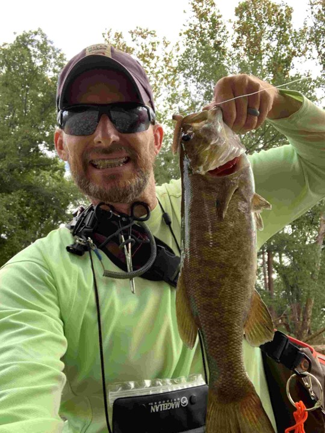

Fishing
I learned to fish as a young kid, but as I grew into my teen years and beyond, I lost interest in doing it as much. Years went by, and the years became decades - decades without fishing. After I returned from Afghanistan, the family and I moved to Fort Rucker, Alabama; it's a great, outdoorsy place. It's also just north of Florida, where my oldest sister and brother-in-law live. They have a spare room and invited us to use it, so we started visiting them as often as work allowed.
At the onset of our trips there, my brother-in-law started taking me kayak fishing in the Florida sound. It was then that I began to kick myself for all of the decades that I had neglected to take part in such a great pass-time. I was hooked. My family surprised me with a modest beginner set of tackle, I purchased a kayak from a friend, and then I started spending my spare time out on a local pond.
After Fort Rucker, my family and I moved to Fort Irwin, California. It's a beautiful post... for a desert. One thing about deserts... they don't have a lot of lakes. So, my new found love faded from thought for another three years.
Then came my first full summer of retirement. I went through some growing pains, but I finally started to get the hang of fishing again. I eventually found my groove, and started regularly pulling smallmouth bass out of the James River around Nixa and Galena. Toward the end of the summer, I went on my first trout excursion at Montauk State Park and caught the limit.
Here's to many more happy years of fishing!
Learn about the different kinds of Black Bass in Missouri at the Missouri Department of Conservation.